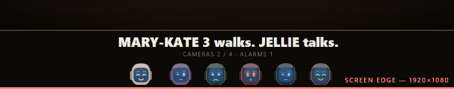

Plan · before any symbol is drawn
The critic found this and I measured it myself with the real night skin. On a 1080p TV, 24px of every 74px chip is below the screen edge and the player's NAME is not on the television at all. At 720p it is 39px and the names are gone too. That breaks the feature's whole premise — a boo is evidence, and evidence has a name on it.

THE RUN BEAT AT 1920×1080 — MOUTHS CUT, NO NAMESThe run picture is 90% of the screen height, and the chrome above plus the strip below do not fit in what is left. Nothing overflows visibly because the run beat hides overflow — it just quietly cuts.
Take the run frame from 90% of the screen height down to about 84%. One number, one line.
Costs: The run picture gets ~7% smaller on every television, including the ones that had no problem. At 720p it only just fits — no margin left for anything added later.
Give the strip its space first and let the run frame fill the remainder, keeping its 16:9 shape. The layout then corrects itself at every screen size instead of being tuned to one.
Costs: A real layout change to the run beat, and the run camera sits in a frame that can now resize — worth watching that it does not re-fit noisily when the window changes.
Either way this lands before the symbols. A badge would rescue part of it by accident — a badge sits at the top of the chip, above the cut — but that is treating the symptom, and the names would still be missing.